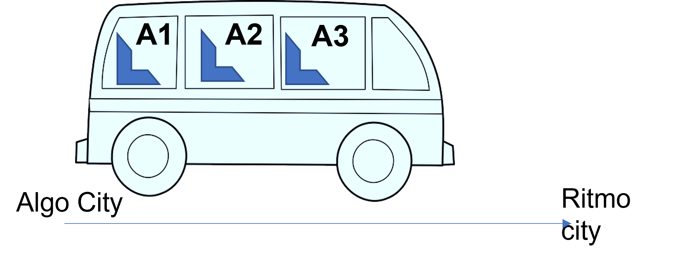
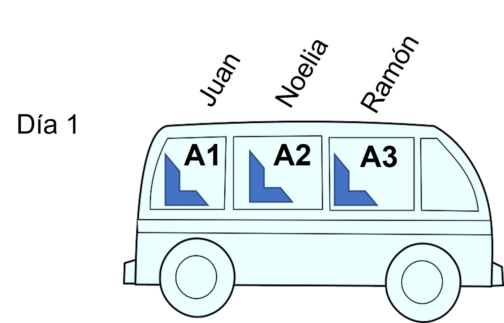
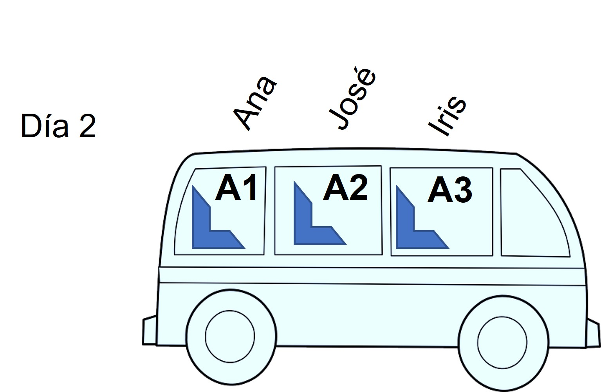
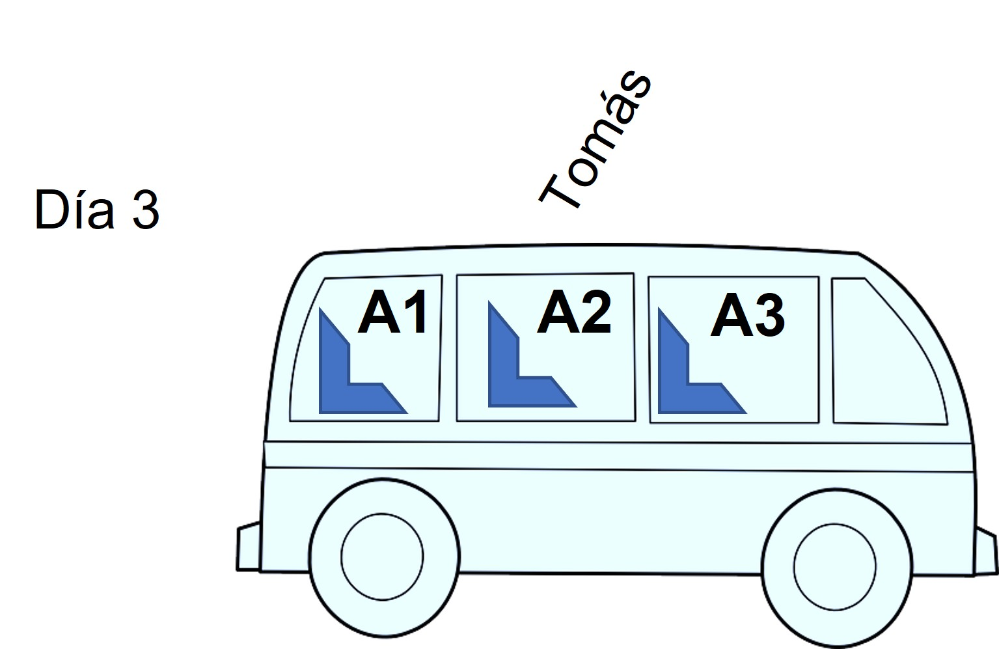

De variables que varían...
Lo primero que vemos en el código del saludo es:.
Definir nombre como caracterAquí lo que hace el algoritmo es instruir, mediante la palabra DEFINIR, la generacion de una variable con dicho nombre.
Además, establece que el tipo de dato que puede guardar la variable creada es CARACTER.
¿Qué es una variable?
Aquí variable, toma un significado diferente al empleado en álgebra. Una variable es un espacio en la memoria de la compu que se genera para guardar allí valores que el algoritmo empleará durante la ejecución.La analogía del autobus...

Supongamos que un bus hace un viaje diario desde Algo city hasta Ritmo city. El bus tiene tres asientos llamados A1, A2 y A3.
Los días 1, 2 y 3, realiza sus viajes con los siguientes pasajeros asignados a los asientos según se ve en las figuras:



Aquí la pregunta es: ¿qué se mantuvo "fijo" en el bus y con el mismo nombre durante los 3 viajes?
Así es! los asientos.
Y ¿qué es lo que cambió en cada viaje?
Muy bien! los pasajeros.
Esta sitiación es una perfecta analogía para comprender la diferencia entre variable y valores que usamos en la ejecución de los algoritmos:
El colectivo es el algoritmo.
Cada viaje es cada ejecución (realización, puesta en funcionamiento) del algoritmo.
Los asientos son las variables !
Y los pasajeros son los valores que se asignan a las variables durante la ejecución del algoritmo !
Por supuesto que esto es una simplificación para entender el concepto de variable, y que hay otras cuestiones a tener en cuenta, como por ejemplo el hecho de las los valores de las variables pueden cambiar (o variar, de allí el nombre de variable) durante la ejecución del algoritmo.